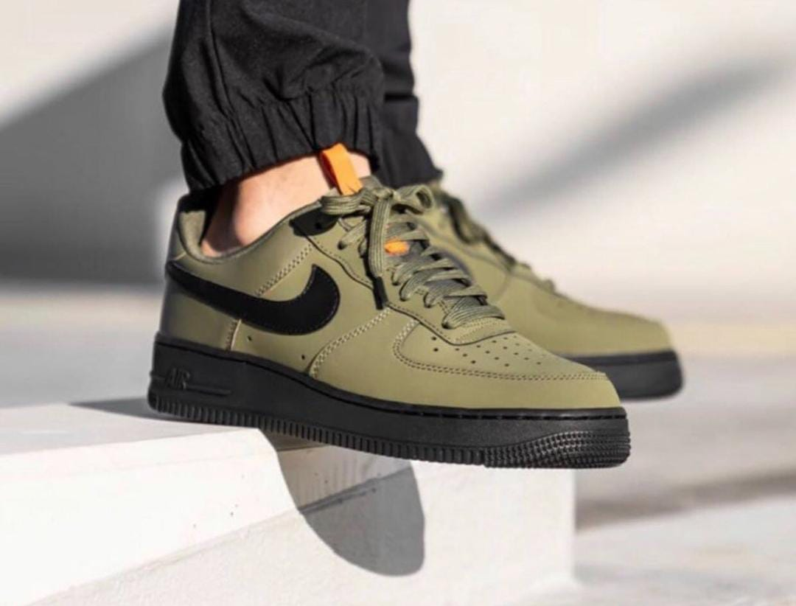
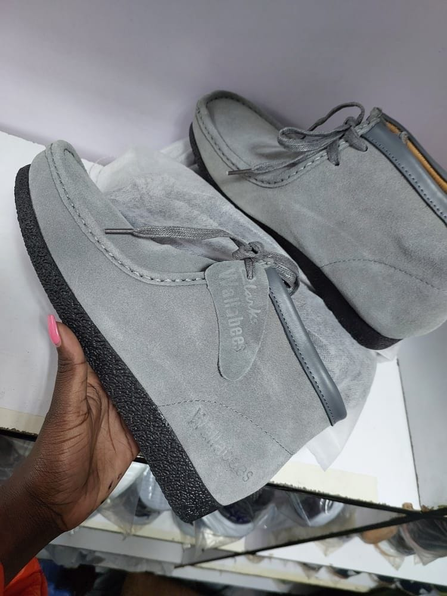
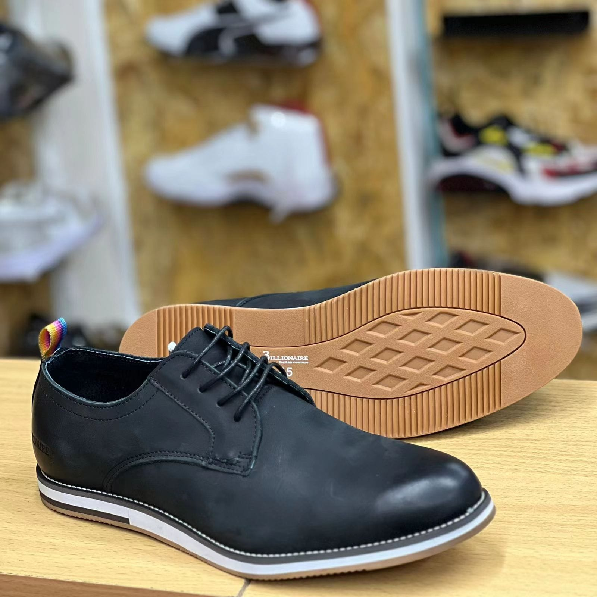

- airmax
- airforce 
- clarks 
- official shoes 

HISTORY OF AIRFORCE 1
Air Force One shoes, also known as Air Force 1 or AF1, have a rich history that dates back to the early 1980s. Here is a detailed account of their origins, evolution, and significance:
Origins
The Nike Air Force 1 was introduced by the athletic shoe giant Nike in 1982. It was designed by Bruce Kilgore, a renowned sneaker designer at the time. The shoe takes its name from the aircraft used to transport the President of the United States, and the design was inspired by the idea of creating a basketball shoe that would provide unparalleled comfort and support on the court.
The model:
The Air Force 1 was released as a high-top silhouette, featuring a leather upper, padded ankle collars for support, and a considerable amount of cushioning in the midsole. It boasted a unique air-cushioned sole, which provided superior shock absorption and impact protection. The shoe's distinctive features also included a large midfoot strap for added stability and a pivot circle on the outsole for effortless changes in direction.
Year of popularity :
Upon its initial release, the Air Force 1 gained immediate popularity within the basketball community. Several professional players, including Moses Malone and Michael Cooper, endorsed the shoe, further elevating its status. However, it also gained significant traction in street culture, becoming a staple in urban communities throughout the United States.
Discontinuation and Resurgence:
In 1984, Nike discontinued the Air Force 1 due to declining sales. However, it did not take long for sneaker enthusiasts and collectors to recognize its iconic status. The discontinued model became highly sought after, leading to a surge in demand. Recognizing the shoe's ultural significance, Nike relaunched the Air Force 1 in 1986.
Evolution and Collaborations:
Over the years, the Air Force 1 has seen various iterations and collaborations, resulting in countless colorways and special editions. Collaborations with artists, designers, and brands such as Travis Scott, Supreme, Off-White, and Riccardo Tisci have elevated the shoe's status even further, making it a symbol of streetwear and sneaker culture.
Impact and Legacy:
Beyond its status as a widely recognized sneaker, the Air Force 1 has left a lasting impact on both the fashion industry and popular culture. It fostered the concept of limited editions and collaborations between sneaker brands and artists/designers, paving the way for the rise of sneaker culture and hype releases.
Today, Air Force 1 shoes remain incredibly popular
and iconic.
They are cherished by sneaker enthusiasts and collectors around the world, and their timeless design ensures that they continue to be a staple in both sports and streetwear fashion.
{kind=link}
{kind=link}
{kind=link}